YPrice
Reducing the "Cost and Currency Difference" Problem
Reducing the "Cost and Currency Difference" Problem

Project Brief: YPrice is a service designed to assist travelers by offering information on the average prices of Korean cuisine. This service is dedicated to reducing the worries associated with "food" and "cost" that pose significant challenges for travelers. By providing transparent and reliable pricing data, YPrice helps visitors plan their meals and budgets more effectively, ensuring a more enjoyable travel experience in Korea.
Project Type: University Capstone Project
Timeline: March, 2023 - June, 2023 (3 months)
Tools: Figma, FigJam
Skills: Competitive Analysis, User Personas, Scenario, Wireframe
Team: 2 UX Designer, 3 Frontend developers, 2 Backend developers
Role: UX Designer
How it all started
This project was an international collaboration with students from the Netherlands, conducted entirely online. To facilitate seamless communication, we used Google Docs, Microsoft Teams, and KakaoTalk.
Our goal was to tackle issues affecting young people today.
To understand these challenges, we explored several questions:
What concerns do youth in Korea and the Netherlands have?
What's the biggest difference between these two places for the youth?
What big changes or trends in the world are affecting the youth?
From our discussions, we found two keywords: "Money" and "Travel." These themes were both related and conflicting, as traveling often requires a budget.
Understanding the Dutch students' interest in visiting Korea, our project specifically targeted the aspect of "traveling to Korea."
1. User Research
Research Goals: We want to explore the significance of food for visitors to Korea. We aim to understand factors such as their preferences, existing services, and budget considerations.
Methodologies
1) Competitive Analysis
2) User Interview
Competitive Analysis
| Yelp | Diningcode | TripAdvisor | |
| Picture | |||
| Target market | Worldwide - Residents looking for places to eat, and businesses seeking to advertise. | South Korea - Residents searching for restaurants. | Worldwide - Travelers seeking information on accommodations, restaurants, attractions, and activities. |
| Strengths | - Vast database of businesses across numerous categories and regions - Has both a mobile app and a website |
- Personalized recommendations - Recommend dating ideas for couples |
- Allows users to book via app or website - Has both a mobile app and a website - A large volume of user-generated reviews |
| Weakness | - Questionable review authenticity | - Focused on other marketing such as blog postings | - Users may be overwhelmed with vast choices in other categories |
| Features | |||
| Multilingual Support | ✓ | ✓ | ✓ |
| Location-Based Discovery | ✓ | ✓ | ✓ |
| Currency Support | x | x | ✓ |
| User Review | ✓ | ✓ | ✓ |
| Restaurant Information | ✓ | ✓ | ✓ |
2. User Interview
4 people were interviewed. For our research, we focused on foreigners living in Korea, specifically targeting individuals in their 20s. We chose three exchange students studying at Hankuk University of Foreign Studies. These students were interviewed in person, and I utilized Speech-to-Text (STT) tools to accurately transcribe the conversations.
The interview was divided into two parts.
Affinity Mapping
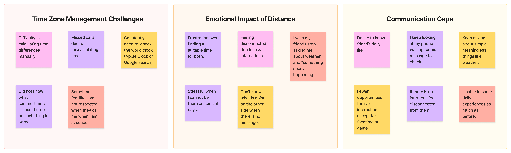
Research Findings
Research Findings
1. Complexity of Time Zone Management
Users struggle with manually managing time differences, leading to missed communications and frustration.
2. Craving for Deeper Connection
There's a significant desire for more meaningful interactions beyond superficial conversations, highlighting a gap in current communication methods.
3. Sensitivity to Time Differences
A lack of awareness or consideration for time zone differences often disrupts daily routines and causes feelings of neglect.
4. Reliance on Digital Tools
The dependency on technology for connection introduces challenges, especially when faced with internet outages, underscoring the need for more robust communication platforms.
Personas
User Persona #1
Name: Yula Lee
23 Y/O - UNIVERSITY STUDENT IN KOREA
Personality : Curious, Friendly
Hobbies : Social media, Reading, Music
Quote: "Korea is now 1 pm… so it's 9 am in Vancouver. He must be working by now."
Bio: Yula currently resides in South Korea and is navigating a long-distance relationship with her boyfriend in Canada. The relationship spans two years, during which time zone differences have consistently posed challenges. Yula finds it difficult to mentally calculate the time difference and align her schedule with her boyfriend's, especially considering his part-time job from 5 pm to 7 pm Canada time. This challenge impedes her ability to feel connected and informed about his daily life.
Goal:
- To effortlessly understand and keep track of her boyfriend’s schedule and daily activities.
- To feel closer by having a real-time sense of what her boyfriend is doing.
Frustration:
- The mental strain and confusion caused by frequent calculations to figure out the time difference.
- The difficulty of coordinating schedules that align with both their time zones, leading to less communication and shared experiences.
User Persona #2
Name: Brian Jang
22 Y/O - INTERNATIONAL STUDENT STUDYING ABROAD
Personality : Curious, Affectionate
Hobbies : Basketball, Gaming
Quote: “My friends keep asking me what I'm doing and what the weather is like. Korean university students use the Everytime Calendar a lot. How can I share my daily life?.”
Bio: Brian has a wide circle of friends and is currently pursuing his studies in New York. He frequently receives questions from friends and family back home about his local time, the weather, his daily schedule, and local events. Initially, Brian patiently responded to each query individually, but over time, these repetitive questions became tiresome.
Goal:
- To seamlessly share his daily schedule, local weather, and updates with friends and family to reduce repetitive inquiries.
- To integrate his life abroad with his social circle back home without the constant need for manual updates.
Frustration:
- The frequency of answering the same questions about his time zone, weather, and daily activities.
- Finding an efficient way to share his life abroad with his friends and family that doesn’t require constant repetition.
UX Design
Requirements Matrixs
Based on insights from two distinct user personas identified during our user research, I have developed a requirements matrix to move on to the UX design phase.
| Feature Name | Description | Supporting Research | |
| P1: Must Have | Time Zone Support | Automatically adjusts and displays times in the user's and their friends' local time zones to simplify scheduling across different regions. | User Interviews, Comparative Analysis |
| Schedule Managing | Allows users to create, edit, and manage their schedules. | Comparative Analysis | |
| Schedule Sharing | Enables users to share their schedules with friends. | User Interviews, Comparative Analysis | |
| Local Issues | Provides information on local issues in the user's and friends' location, facilitating shared experiences. | User Interviews | |
| Signup/Login | Easy and secure signup/login process to access the app's features. | Comparative Analysis | |
| Friend List | Manage a list of friends within the app, with options to add and remove. | User Interviews, Comparative Analysis | |
| Location Setting | Allows users to set and share their current location to automatically update local time and weather information. | User Interviews | |
| P2: Nice to Have | Status Message | Enables users to post status messages that friends can see, sharing moods, activities, or thoughts. | User Interviews |
| Profile Picture | Allows users to update their profile picture, helping friends easily identify and feel closer to each other. | User Interviews | |
| P3: Surprising and Delightful | Seamless Integration with Other Services | Integrates with other social media and email to streamline communication and scheduling. | Comparative Analysis |
| Location Notification | Sends notifications to friends when the user arrives at or leaves a significant location. | User Interviews | |
| P4: Can come later | Language Translation | Provides real-time language translation for messages and posts, bridging the communication gap between international friends. | User Interviews, Comparative Analysis |
| Augmented Reality (AR) Meetups | Uses AR technology to create virtual meetups in significant places, offering a new way to experience shared moments | User Interviews, Comparative Analysis |
Product Roadmap
After having established the requirement matrix, I listed the different features I wanted to include in the website and then prioritized them into a spreadsheet. All the decisions have been supported by user interviews and comparative analysis.
Information Architecture
Guided by the product roadmap, we have decided to start designing from P1: Must Have to P2: Nice to Have. To communicate with developers, we made two different types of IA which are scenario and data structure,
1) Information Architecture - Scenario
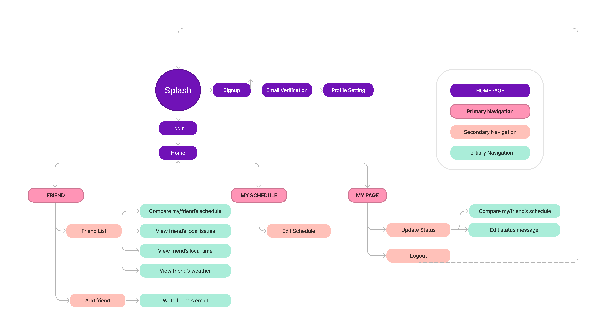
2) Information Architecture - Data
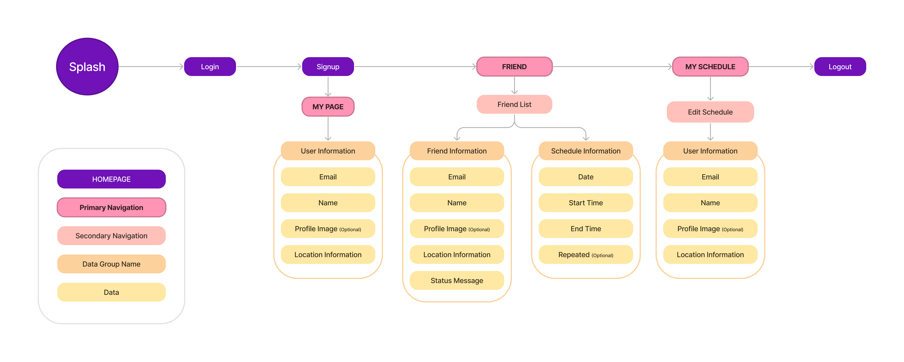
User Flows
It was clear from the Information Architecture that I needed to design 2 main User Flows.
#1 Setting Up an Account and Profile
Splash Screen: The user opens the application.
Sign Up: The user selects the sign-up button.
Email Verification: The user enters their email and verifies it.
Profile Setting: The user completes their profile setup including name and location.
Home: The user navigates to the home screen, where they have access to primary, secondary, and tertiary navigation options.
#2 Managing and Sharing Schedules
Home Screen: The user logs into the app and starts on the home screen.
My Schedule: The user navigates to their schedule management section.
Edit Schedule: User adds or edits events in their schedule.
Friend List: The user goes to their friend list from the home screen.
Compare Schedules: The user selects a friend and compares their friend's schedule with their own.
Share Schedule: The user shares their schedule with a friend or a group of friends.
Task Flow
#1: Adding a Friend
Home Screen: The user is on the home screen after logging in.
Friend List: The user navigates to their friend list.
Add Friend: The user selects the option to add a friend.
Enter Details: The user enters the friend's email to send an invitation.
Invite Sent: The system sends an invitation, and the user waits for the friend to accept.
#2 Updating Status Message
My Page: The user navigates to 'My Page' from the home screen.
Update Status: The user selects the option to update their status.
Edit Status Message: The user edits their status message.
Save Changes: The user saves the updated status message.
Confirmation: The system confirms the status update, and it becomes visible to friends.
Wireframes
Initially, we sketched out the design on a whiteboard using markers. Thanks to the engineers' insights, we were able to thoughtfully consider how deeply users would interact with the features for an effective experience. Following that, I created the wireframe designs using Figma.
Figma design
 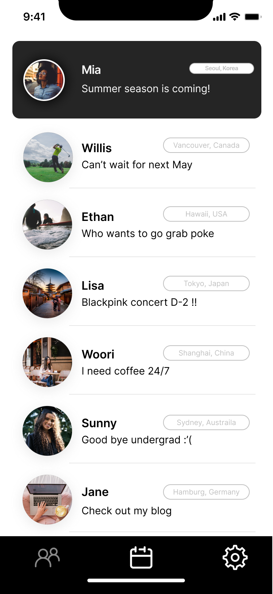
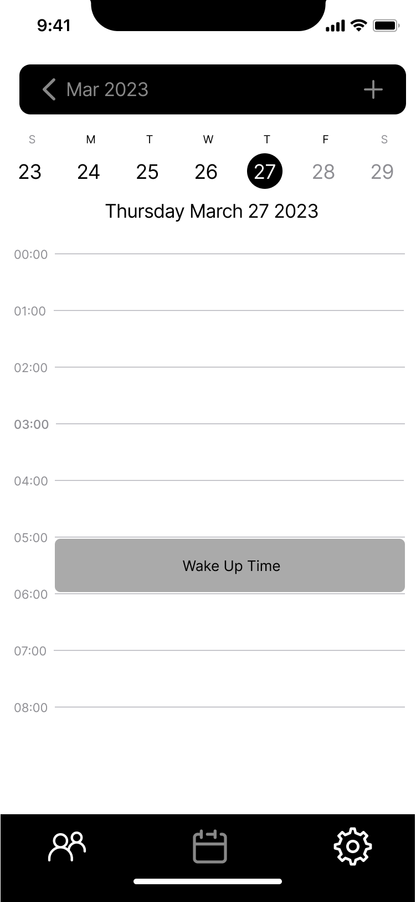
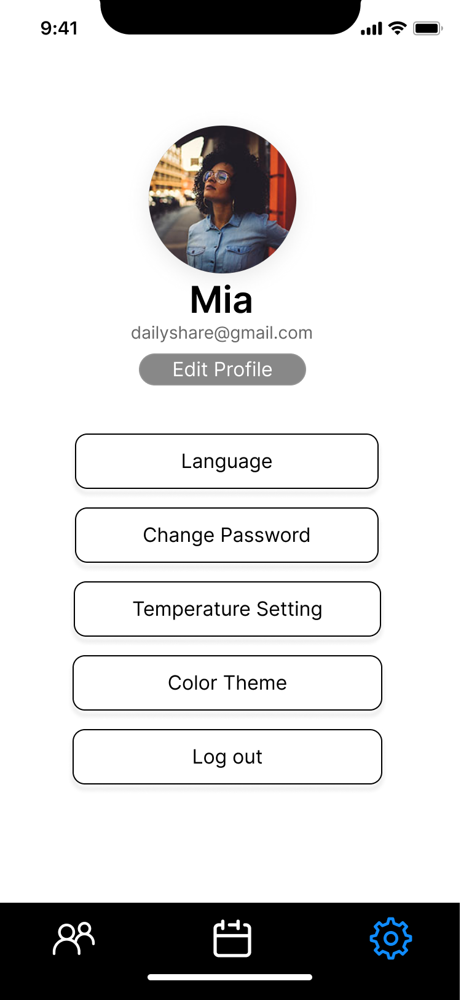
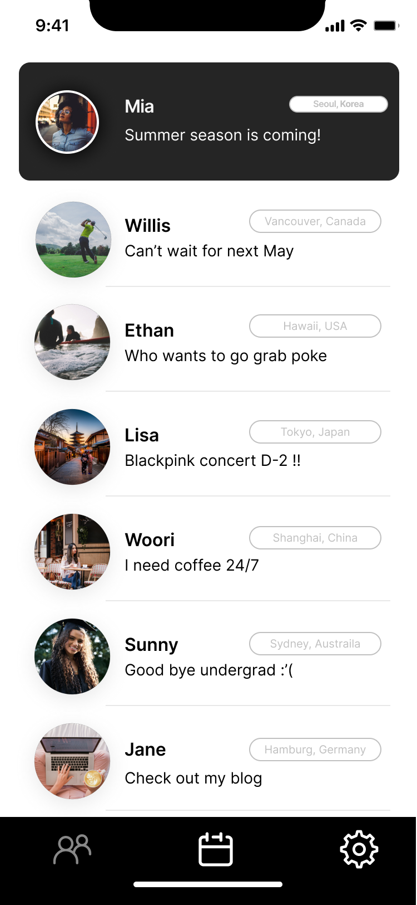
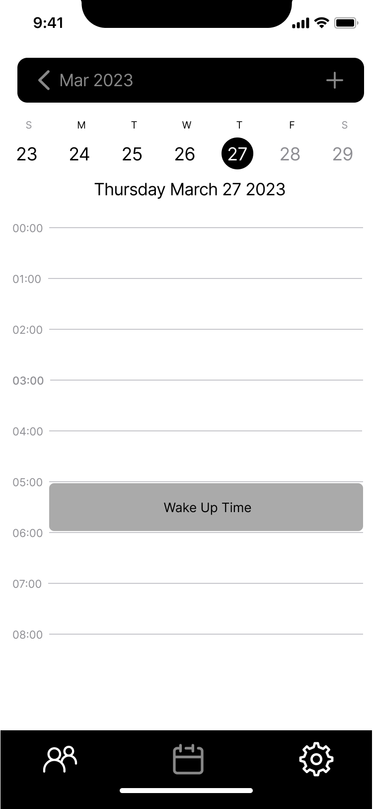
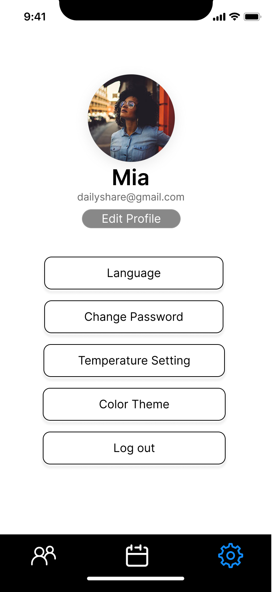


Usability Test
Prototype
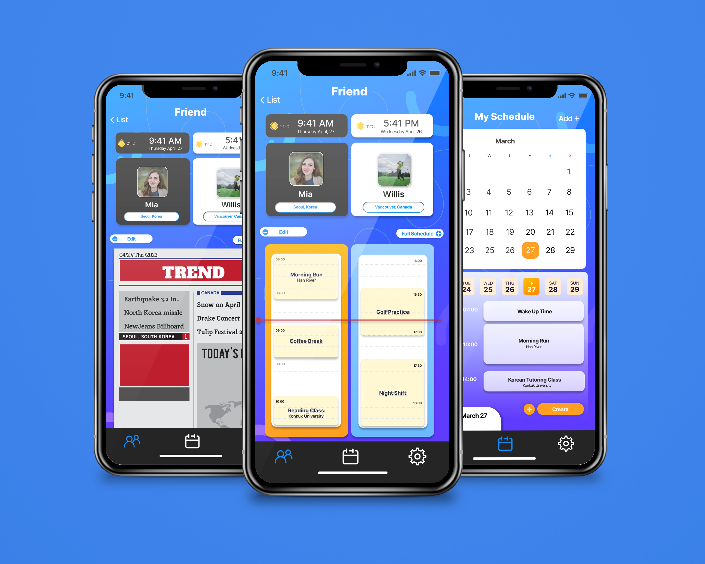
1) Dual-Time Zone Schedule Comparator The user selects a friend from their list, activating a split-view interface. The left side of the interface displays the user’s profile, which includes their current schedule and local time. The right side simultaneously displays the selected friend’s profile with their schedule adjusted to the user’s local time zone.
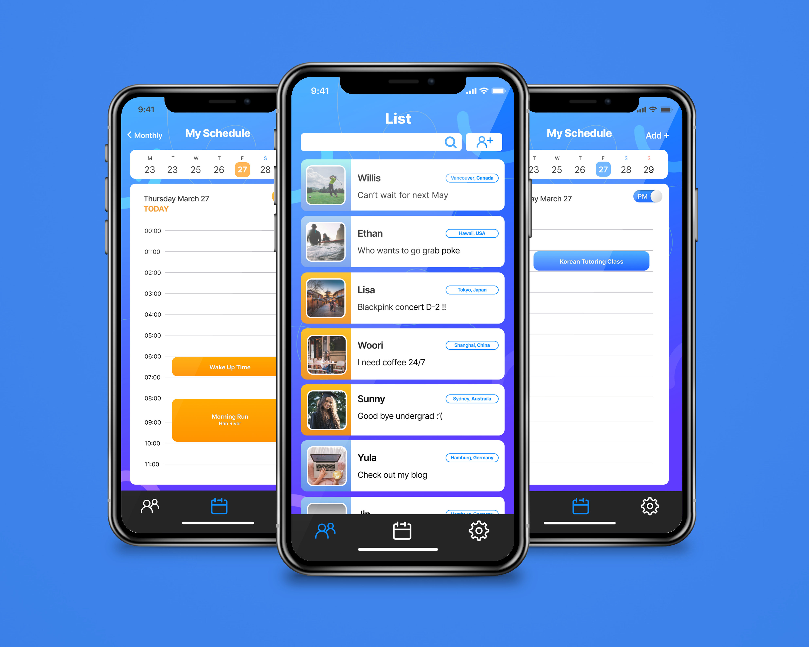
2) Intuitive Design of Time The interface employs a color-coding system to differentiate between AM and PM times, with AM represented by a vibrant orange and PM by a serene blue. This color-coding extends throughout the UI for consistency and ease of understanding, featuring not only on the schedule detail pages but also on the friends list. The friends list provides an at-a-glance view of each friend’s local time with the corresponding AM/PM color cues, thereby improving the organization and quick comprehension of global time zones.
Outcome
The prototype I’ve created has been tested on 4 participants. The age range of them was 21 to 30 y/o.
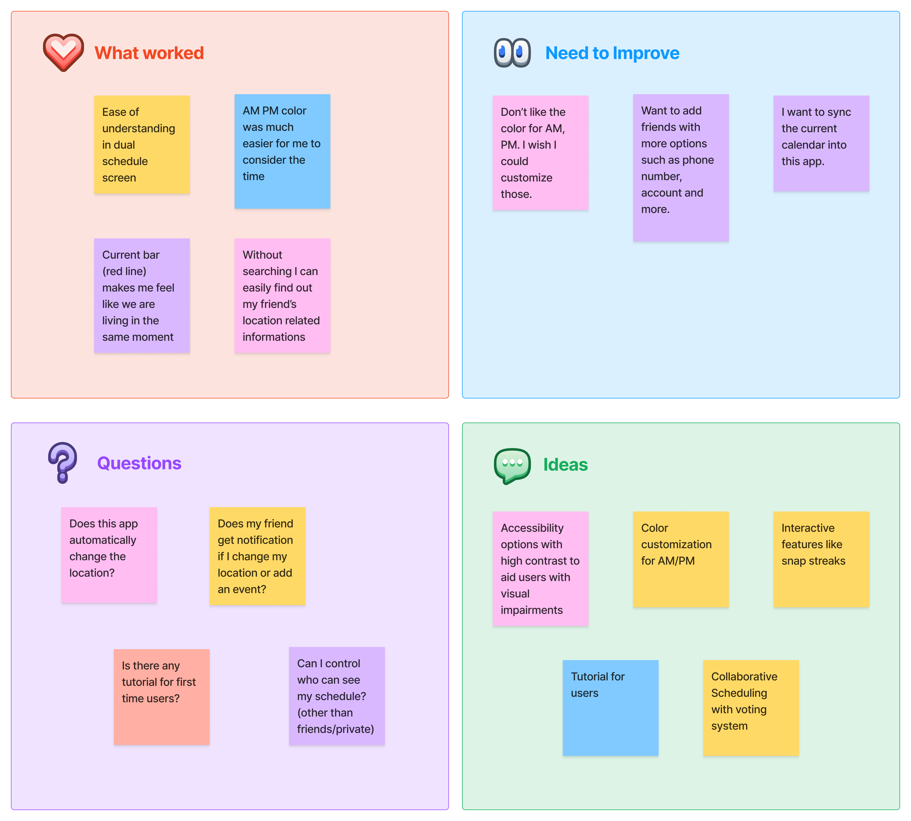
Iterations
! 메모 디자인 - 이렇게 여러개 가로 배열
Project Prototype
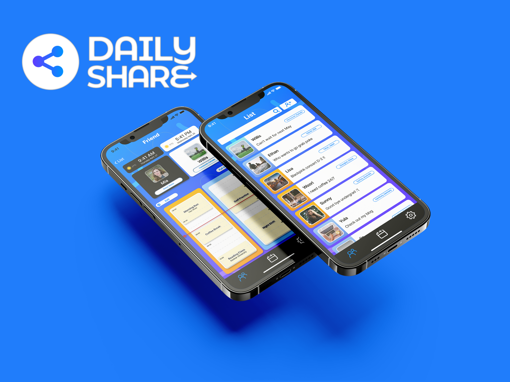
Key Takeaways
Challenege
As this project was an academic exercise for an HCI course at university, there are constraints on the ability to fully develop the app and publish it on app stores.
Lesson learned
Through the application of HCI principles, such as persona creation and user testing, the project reinforced the importance of centering the design process around the users' needs.
A key learning was the significance of pinpointing and eliminating user pain points to enhance the overall user experience. This "problem-removal" approach is crucial for creating intuitive and efficient interactions between users and technology.